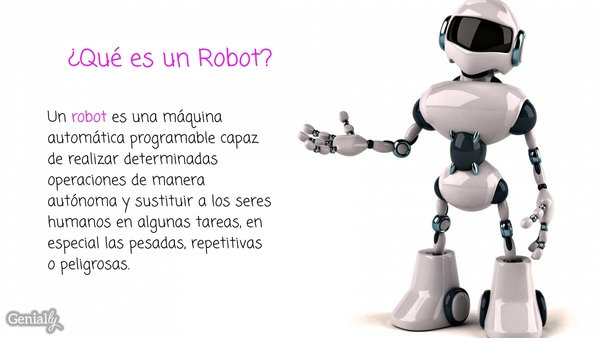
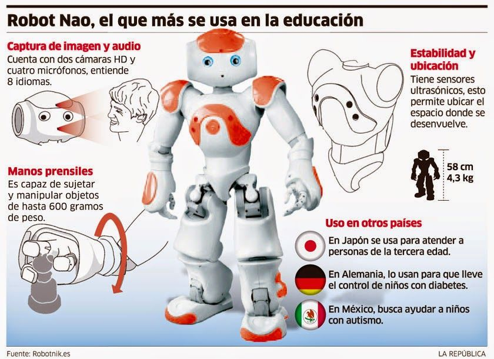

robot
¿Para qué sirve un robot y clases de trabajos que realizan los robots?
Un robot sirve para desarrollar cualquier tarea que pueda ser automatizada y es por ello que la clasificación de los robots es muy variada. En la actualidad se están creando soluciones para trabajar en prácticamente cualquier ámbito laboral, como pueden ser en:
Hoteles, bares y restaurantes con robots mayordomos y robots cocineros
Sector servicios y sector Industrial, aeronáutico y aeroespacial.
Industria armamentística, seguridad y vigilancia.
Robots espaciales, exploradores, de rescate y de investigación
Robots Educativos y en la medicina, como son los robots quirúrgicos.
Sector de la banca y las finanzas por medio de los bots y Chatbots.
En la lucha contra el medio ambiente y contra el cambio climático..
TODO ROBOT TIENE TRES TIPOS DE COMPONENTES:
Sistema de control: como una placa controladora.
Sensores: capaces de interpretar información del mundo o del propio robot.
Actuadores: producen un efecto sobre el mundo o sobre el propio robot.
Si comparamos un robot con una persona, los sensores serían sus sentidos. Éstos transmiten información a su sistema de control o cerebro, modificando su comportamiento e influyendo sobre el mundo mediante sus actuadores. Además, un robot necesitará una fuente de energía para funcionar y una estructura física para sostener los elementos que lo componen.